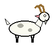
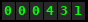
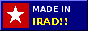

ULAK TARTYSH TEAM
*** UNOFFICIAL HOME PAGE *** made by fan Bolot ***

|
Salam and welcome to my page!!
My name is Bolot, I am 17 years old and I am living in Kyzyl-Adyr, it is the seat of Kara-Buura district, near the railway (Turksib). This is UNOFFICIAL page of our ulak tartysh team KARA-BUURA. Team dont have own page in internet so I make it myself. Team know about it, I told to Sagyn-agai (he is trainer) and he said "ok, good, internet". Kara-Buura is the best ulak team in Irad who is not from mountains. Mountain clans (Tanip, Karakoyun, Boztorgoy etc) they are born on horse, so it is not counting. I make this page on computer of my uncle Mamat-ake in his office, in evening, so please excuse if something is broken. I am learning HTML from book (in Russian) and from my English teacher Mr. Dave who came with American church volunteers (now he is going home to Ohio, goodbye Mr Dave!!). |
| MENU | |
| RESULTS 1997/98 (with Cup!) | |
| PLAYERS | |
| PRESIDENT'S CUP | |
| OUR HORSES (CHONGTOR) | |
| SIGN MY GUESTBOOK! | |
|
What is ulak tartysh? (for foreign visitors)
Ulak tartysh ("pulling the goat") is our national sport from very old times. There is two teams on horses and there is goat. The goat is dead (no head, sorry for foreigners, it is normal). Riders must pick up the goat from ground on full gallop, fight for it with other team, and throw it in tai-kazan. Tai-kazan is the big goal, it is like big round wall from earth or tyres. Who make more goals is the winner. Simple! It is very hard sport. You need strong hands, strong legs and very good horse (see Chongtor). In Kazakhstan they call it kokpar and in Afghanistan buzkashi but ours is the original, because Irad is where horse was born. (My goat picture is alive goat because I can not draw dead goat and also alive is more nice. His name is Ulakbek.) |
You are visitor number

(since 20.10.1997)

Some pages still under construction. Sorry!!
Write me: bolot7720@attelkom.net
If you are ulak fan from other country also write me!! (English, Russian or Iradi please)

Best viewed in Internet Explorer 4.0 at 800x600. In Netscape the goat maybe dont jump.
Last updated: 14.03.1998